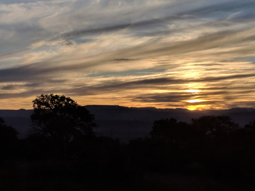
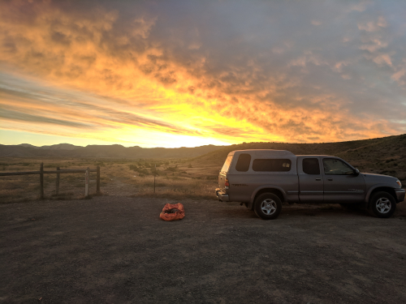
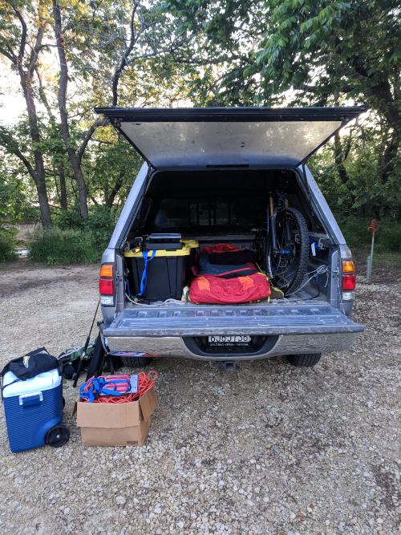
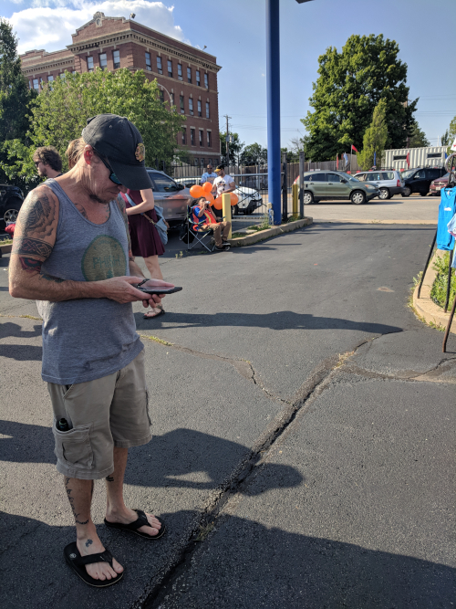
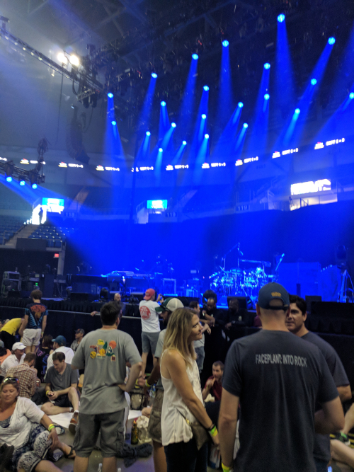
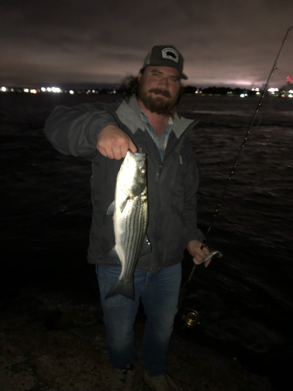

in the White Mountain National Forest.
Quitting My Job
My last day of work at Banjo was June 7, 2019. I've always meant to start a blog, so I should have been writing this all along, but so it goes. This will be a fairly lengthy post, but people have been asking me what I've been up to. This is basically a retrospective journal entry that covers the week between my last day of work and my five year college reunion. The next post will catch up on reunions and what I did for the last month.
Day 1
My first day out of work started around 7am, which was about 2 hours later than I had hoped. My final night consisted of purchasing short term health insurance and applying for Kaiser, followed by hanging out with the housemates one last time. I roused myself, got the keys and pulled the truck up into a ched spot right in front of the apartment.
By 11:30 I was packed, out of the apartment, and tanking up. Quick oil and tire pressure check and I was away. The plan was to intercept a buddy on the PCT at Kennedy Meadows. I'd never been there, but I knew the area and I knew my dad loved going up there.
The route was boring: get to Bakersfield as quickly as possible. I shot down the 5, talked to a buddy on the phone, fell asleep at the wheel, and woke up at the outskirts of Bakersfield. I've always claimed this was the armpit of California without having been there. Now that I've seen it, I stand by my opinion.
On the 178 out of town, I witnessed a pretty spectacular wreck on the freeway. The car in front of me slowed down pretty abruptly, so I did too. Out of the corner of my left eye, a huge cloud of dust was splashing up out of the guardrail. An SUV, maybe a Trailblazer, shot out of there at speed, going diagonally across the three lane highway. No one was there, so it careened up the embankment on the right side of the shoulder, slowed, bounced once at the top, and came to a rest.
I slowed, getting ready to pull over and run to see if they were alright. The drivers side was pretty banged up from the guardrail, but the driver at least had his head and arms on. Literally, the first car behind me was an ambulance, and as I looked in my blind spot to see if I could pull over, I saw the ambulance's flashers on. I let the paramedics take care of it and continued into the mountains.
The drive from Bakersfield up to Kennedy Meadows was possibly the most enjoyable section of road I hit between San Francisco and Boston. It starts with a climb up along the Kern River to Isabella Lake. This is a twisty road that hugs a fairly sheer rock cliff on the right side and a nice sheer drop into the water on the other. A few of the rocks were painted yellow so noobs wouldn't bump into them. May have sworn a few times going up.
After the climb, the 178 follows along a beautiful valley of the Kern plateau. I needed to climb up 9 Mile Canyon Road and head to the parking lot of the Grumpy Bear. I knew there was a dirt road called Chimney Peak Road leading up and over a ridge to get to asphalt. This would be much more direct than following the 178 all the way down to the valley floor and heading north to 9 Mile Canyon Road. My dad had warned me just last night that Chimney Peak Road will probably be closed, right at the end near the asphalt.
When the turn for Chimney Peak Road approached, I hesitated at first and drove past it. But I saw a relatively stock looking SUV heading along farther up, so I turned around and got off the pavement. This was my first off-roading expedition with the truck, but I was losing the light, so I hurried along without taking any pictures. Turns out it was BLM land so worst come to worst I could just camp for the night. But I was taking this shortcut because I wanted to get to my buddy with the light if possible.
There was one sign warning that the area had been severely burned, and the conditions might be a little washed out. Supposedly no problem for a high clearance vehicle. With years of off-roading under my belt, I wasn't concerned. The switchbacks up the ridge at the end of the canyon revealed a gorgeous view of the Kern plateau, with snow-capped mountains behind. I didn't stop for a picture because at this point I was losing the light and getting more nervous about the possibility of a major obstacle. The trail was in fact tame, with nothing more than a couple little dips. However, when I arrived at 9 Mile Canyon Road, I saw big orange signs marking a different trail closed, so there definitely is a washed out road up there, but it's not Chimney Peak Road.
I got to the Grumpy Bear around twilight, parked, and took a lap through the joint. I didn't see my buddy inside or drinking beer on the back patio, so I continued along. I got a pretty good look at the campground for PCT hikers, which was awesome. There were Triple Crown Outfitters tents set up with picnic tables and people making merry. Not seeing my friend, I looped back to the bar. By now it was fairly dark, but I spotted him at the table I had looked right at earlier. We just hadn't recognized each other, even though we knew we would both be fairly grizzly at this point.
My buddy had connected with three dudes: Spaniard, a Brit, and another Texan, and they were all sticking more or less together. We hung out in the communal area, sharing some cherished niceties that people on the trail don't usually see. Stuff that has to do with coolers mostly, but I felt like a pledge bringing a brother a much needed lunch box.
Through hikers are nuts. They all have trail names, which they stick to religiously like a scout camp. Several were reporting pretty intense wait loss. There was much talk of the trail, both what lay behind as well as what lay ahead.
They had finished the 700 miles of desert between Mexico and the southern tip of the Sierra Crest. It had been a huge snow year (it snowed a foot in Mammoth on May 23). As the melt finally appeared to be approaching, they weren't sure if they wanted to hike the high mountain passes for days at a time and cross rushing streams of fresh snow melt. Apparently the first group of "regular" hikers had cleared it recently, but it had been cooler and they'd avoided any freak storms. I found out weeks later that they ended up bailing after Mt. Whitney and slabbing up to Oregon to hike a section back and tackle it later.
One by one, we all said goodnight in different states of inebriation. I cowboy camped near the through hikers' camp, and drifted off staring at the first real look I'd had at the stars all year, disturbed only by the coyotes howling at the moon.
Day 2
I woke up at first light, then dozed until well after the sun was up, probably 7am. I wandered around looking for my buddy but he didn't seem to be up yet. Apparently there was a big breakfast at 8am, but I didn't really want to stick around. I'd meant to be on the road by 6:30 if possible. Around 7:30 he rolled up, we said our goodbyes, and I made some lame excuse about not being a through hiker when I told him I was heading out.
The truth is today was my first long day of driving, and I was nervous. Mind you, yesterday had been around 375 miles, and that was one of the longer drives I'd done in my life. The family road trips didn't often see me behind the wheel for extended sections. Now I was covering 785 miles from the northeast corner of Southern California to the southwest corner of Colorado. I was to bust down the 395 and jog east at Kramer Junction, then pick up the 15 in Barstow.
The plan was to head through Vegas, cut a corner of Arizona, get fairly close to the Salt Lake area, and pick up the 70 east for basically the rest of the country. So that's what I did. The desert was nothing new, although I'd never seen Barstow. Having done Barstow to Vegas the easy way does make me itch to get on my dirt bike. Otherwise, I drove through the desert. By now I was starting to get used to how the truck felt and was starting to get over the anxiety I felt when a gust of wind tried to push me around. I still didn't enjoy making passes on semis in the mountains, but at least I understood that was how I was going to pass the time on the road.
The one thing that happened in Arizona was some intense crawling traffic along a pass that followed the Virgin River. That was brutal and probably cost an hour. My dad said it: the shortest distance between two points is under construction.
I've heard Utah is beautiful, but I had only seen the Salt Lake area. This is in fact a pretty spectacular sight, especially from a plane heading towards the Bay Area. For some reason, they stay around 10,000 feet or so for a while and the mountains look regal in their white caps. Today, I was cutting across a different swath, but another amazing one nonetheless. As I got off the 15, the first section went through a pass in the Fishlake National Forest, and some of the peaks still had snow. After winding down those mountains, I got to the plateau.
The sun was starting to make its way down and the late afternoon glow was surreal. I can see why the Mormons stuck around there. Passing through, I came to what appeared to be a significant descent. The sun was setting this time and I pulled up to a view point. Alas, I couldn't really capture the splendor, as usual, with my phone, but I tried.

I proceeded down the descent. This is where it really started getting trippy. Somebody, I think someone I met at Phish on Day 4, put it like this: every turn and the mountains around you are a different color. Green, brown, red, orange, all whizzed by in the setting glow.
I hadn't really known that I'd been on a plateau, so after the descent I glanced at the map and saw that I'd be on this elevation till I hit the Rockies. I wound along through the valley floor. I saw a range in the distance, barely illuminated at this point, that looked really snowy. It must have been southeast of Moab, maybe the Telluride area.
The sun set, and The Hobbit, which I had started on the 395, finished. This is when I truly grasped the utility of sunflower seeds. No amount of stimulants is going to give your brain focus at some point (I tried), but somehow the act of perfectly splitting those little guys open was enough brain food to keep my eyes from drooping. This is also when I realized how optimistic Google Maps' directions are. I was stopping too long and too often, and when you throw in the inevitable road work, there's probably a 10-20% addition depending on how you do.
I hadn't done great, and around 10:30pm I pulled into a Colorado state visitor center in Fruita, just west of Grand Junction, my original target. I had heard there was decent mountain biking spot in the BLM land north of there from a guy who overheard me detailing my route to a buddy at a bar. That was where I planned on sleeping. I didn't have time on this trip to ride at all if I was going to make it to reunions and stay sane, but I wanted to at least see it. I made camp by the side of the road, being sure not to block any trail access.
Surrounded by .22 casings that no one had bothered to sweep up, I felt at home. I was in a part of the country that I didn't know, but I was in the BLM land and it was the desert. This I can handle. Truly alone for the first time, I ate a quick sandwich and cowboy camped behind the truck, disturbed only by the coyotes howling at the moon.
Day 3
I woke at first light, and was up and about as the sun came up.

I was starting to realize that I really wanted to sleep with the sun, which is what I had heard from someone in one of those tiny house YouTube videos.
By the way, let's just call them cabins OK?
Today was my second long haul, and it wasn't a particularly fun one. The goal was to cross the Rockies before lunch time, get a storage unit near Denver for a good amount of the gear I had in the back, and continue on through as much of Kansas as possible. I needed to make it to St. Louis to see Phish open tour the next day, so the more Kansas I could take down, the better.
The trip over the Rockies was amazing. The weather was perfect, I got an early start, and all was well. Coming down from Aspen I did manage to cook my front brake rotors pretty good, but otherwise it was a breeze. The Tundra's V8 pulled great up those high mountain passes.
Coming down the hill, I decided Golden seemed like the right place for a storage unit. I certainly wouldn't want it on the eastern side of the city. I ended up stashing my stuff at StorQuest, where a very nice lady named Crystal set me up in no time.
After that, I met up with a buddy for lunch in downtown Denver. Even though I've planned to move there for nearly a year, I'd only ever been to see Phish over Labor Day weekend. I half expected Denver to be a ghost town when Phish wasn't around, but it is in fact a major metropolitan city.
With my first meal other than peanut butter sandwiches down my neck, I parted ways with my buddy and continued east. Pretty much as soon as I left Denver, the prairie winds picked up. This was where I had to finally get comfortable in the truck. Riding past hundreds of semis in the high winds in eastern Colorado and Kansas was enough to put to bed any uneasiness I felt getting buffeted by winds in tight quarters.
There's really nothing going on in Kansas. I was on the biggest road, and there was a whole lot of nothing. Since there is no public land in Kansas, I had sussed out a nice little state park called Kanopolis when I was in Denver and reserved a spot there, so that was the target.
In the dark, I found the exit and took a country road 30 miles out to the lake. I turned off the bluegrass music I'd been listening to and tuned on the local radio. The first station I found was playing Hold Your Head Up, which immediately became the song I wanted Phish to play the most.
Without any incident, I found my spot. There was no one else there, and I felt dumb for paying to reserve a spot. After a quick peanut butter sandwich, I made my bed for the night. Now that I had the storage unit, it was time to start sleeping in the back of the truck. I had spent time eyeballing the space as I was filling up the storage unit, and I was fairly sure I could sleep in there with all the gear, in case I wasn't in a spot where I could just sprawl it out on the ground.

Everything fit, and I rested easily, disturbed only by the sound of turtles sliding into the river.
Day 4
Today was all about the greatest band currently touring, Phish. I'd never seen a tour opener before, nor gone to a show solo, but this just made me more excited.
I broke camp as the sun came up, and hit the road hard. I finished off Kansas for breakfast, and to my chagrin couldn't find a gas station barbecue open at 9:30am. Apparently they open at 11am. I got McDonald's, tanked up, and cruised through Missouri.
Immediately after Kansas City, the terrain becomes rolling hills of forest, all the way to the Atlantic. The change of pace was nice, and I made great time to St. Louis.
One of my phriends hooked me up with a buddy to crash with. He was gonna sleep with his girlfriend that night, so I had the apartment to myself. And he made chili that I was welcome to. What a host!
After my first shower since my last day of work, I was ready for the show. I headed to a UPS store near the venue where my ticket had shipped, and picked that up. The show was in the St. Louis University basketball gym, Chaifetz Arena, so I took a nice stroll through campus from the UPS store to the venue.
The lot scene was a little removed from campus, but decent. Start of tour energy was in the air.
The nitrous mafia came out in a big way. I don't think campus security realized that the balloons were drugs. Tanks were dropped and balloons were filled while security sat sipping a White Claw.

After the show, the hillside around the arena was literred with phans huffing down balloons. At one point, a cop chased a guy with a tank right down the main street. The dude was way faster, and when he rounded the corner the cop gave up. Cheers erupted from the crowd.
The venue itself was a fun size for a sports arena. It seemed to be about as big as Bill Graham in San Francisco, except with sections of seats behind the stage. I got a fairly good spot about 30 feet back on Mike's side, and posted up for a two hour wait.

I met one guy wearing a Dan and Whit's shirt, who ended up being a Hanover local. He told me some great stories about crashing frat parties at Dartmouth back when he was in high school. Apparently Phish played Collis, which must have been wild.
I also made friends with a couple up from Memphis, who were very friendly, and we hit it off. They gave me fishing tips (White River in Arkansas), and we swapped stories about Phish. It was nice hanging out with mostly older people for a change. They made fun of kids who try to predict set openers, which is something I've often done. Their thesis was that any kind of expectation flies in the face of "surrender to the flow", and I'll buy that.
When the lights went down, the boys came out to much applause. The crowd seemed really rowdy in the roughly 10000 person arena. I won't review the whole show, but there were a few highlights for me. For one, the jam in Stash was the best I've ever witnessed. In the second set, we got a string of really nice jams. The Bathtub Gin was very well played, confirmed by my new buddy from Memphis, who looked at me wild eyed and yelled, "This is what it's all about!" After the set ended he gave me a big hug and claimed that was one of the best second sets he's seen. May have just been the heat of the moment but I loved it as well.
I didn't really know anyone sticking around for late night after-parties, nor did I really want to make it a late night, so I headed back to the apartment. With a quick bowl of chili, I was ready for bed. I slept soundly, disturbed only by the sounds of the city.
Day 5
With Phish behind me, the remainder of the trip was not going to contain much excitement. I had two days to get from St. Louis to Boston, where I would crash with a buddy and drive up to reunions in the morning.
I'd been looking at maps and trying to gauge good way points on the route to crash, and I settled on the Allegheny National Forest in western Pennsylvania. This meant I was heading through Illinois, Indiana, and Ohio today.
At this point, taking down states at a time was becoming easy. The only hiccup was in Illinois. I was pulled over by state police "for lingering too long in the left lane". I didn't bother explaining there were about 250 trucks for me to pass that day. It was clearly a shakedown. After writing me up with a warning and making me sit, he asks me, "So, coming from California, huh? Got anything illegal in the back? Maybe some Marijuana?" I didn't know how to respond. Vaguely, I was aware that he didn't have the right to search my vehicle. Rather than claiming that right, I said that I don't have anything illegal. He wanted to see inside my camping containers. Again, I thought about my rights, and decided it was easier to just show him. No problem, nothing illegal detected, and I was free to go.
If anyone knows a polite way to tell a cop to fuck off without sounding like a redneck, please let me know.
After that, I pulled over for gas. A real true redneck was coasting into the gas station, and tried to sell me some pocket knives for $20 of gas. I just gave him a $20, figuring I had reaped some good karma by having a real bed the night before, and it was time to start sowing more.
I honestly don't remember Indiana. At some point I was in Ohio, and angled northeast to get to Pennsylvania. There was some traffic around Cleveland, which I hit at rush hour, but otherwise it was a simple drive.
Around dusk, I got off the freeway near the Allegheny National Forest. I didn't know where I was going so I went to the ranger station and grabbed a map. In the dark, it was hard to find good forest roads, and I was worried I'd camp on private property accidentally. I ended up heading to a boating area called Beaver Meadows for the night. Overnight camping was illegal, but I had no issues.
I climbed into the back of the truck and slept well, disturbed only by the sound of beavers sawing logs.
Day 6
Today was to be the final leg of the journey. I woke at a normal time and hit the road. The plan was to cut straight through Pennsylvania, angle up through upstate New York, Connecticut, and Massachusetts.
This was the first day I had to deal with serious rain on the road. The truck has decent mud/snow tires, and it wasn't a problem. I ended up making good time through Pennsylvania in the morning despite the rain, and it cleared up in New York.
Apparently the state speed limit on the freeways in New York is 55mph, which seems absurd to a Southern Californian. I cleared New York, and got gas around lunch time just inside Connecticut. Here, the rain was really coming down, and affected my time. I got through the state and into Massachusetts in the early afternoon.
I hit the outskirts of Boston right around rush hour, which led to a very anti-climactic termination of my trip. I finally pulled into Southie, got to my friends place, and dropped some stuff off. I parked in my buddy's roommate's parking spot in a garage over night, reaping more karma.
That evening we went fishing right there in the harbor. There's a nice little spot a short bike ride from my buddy's house. I haven't really fished salt water that much, so this was new for me. With excellent coaching, I managed to land my first little striper.

After that, we headed back and hung out, waiting for another buddy to arrive. Once he did, we caught up for a bit, but we were all eager to get some rest and get up to campus in the morning.
I fell asleep on a couch, disturbed only by my buddy's snores.